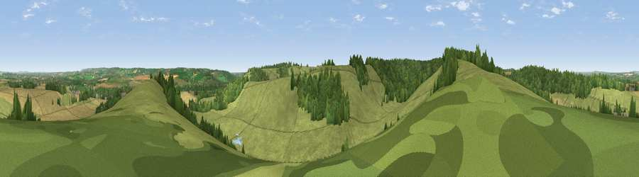

Viewpoint near Moulsford
#18624 in England · top 17% of its area beats it · near MoulsfordWhere it is
The exact computed spot (SU 57475 82725). Click the marker for map links.
The view, rendered

A 360° render of this exact spot computed from the terrain model, tree cover and land cover — summer colours, afternoon light, calibrated against photographs of famous viewpoints. Real trees, hedges and buildings will differ in detail.
The panorama
Grey silhouette: terrain skyline in each direction (720 bearings, Earth curvature and refraction included). Dashed green: skyline with trees (+15 m) and buildings (+8 m) as obstacles. Blue strip: how far the ground is visible on each bearing.
Where the view opens
Wedge length = distance to the farthest visible ground on that bearing (vegetation-aware). Rings at 10, 25 and 50 km.
What fills the view
64% grassland · 19% woodland · 15% cropland ·
Angular shares of the visible panorama (visual magnitude), not map area. Landscape diversity 0.41 (0–1 Shannon).
Key numbers
More beautiful places nearby
The staircase of upgrades: each row has a higher view potential than everything closer. Driving times are estimates from straight-line distance, calibrated against real road routing — check an actual route before setting out.
| Place | Direction | Drive | Score |
|---|---|---|---|
| Viewpoint near Moulsford | E · 1 km | ~2 min | 58.8 |
| Viewpoint near Compton | W · 3 km | ~8 min | 64.1 |
| Castle Hill | N · 10 km | ~19 min | 68.3 |
| Round Hill | N · 10 km | ~19 min | 70.1 |
| Viewpoint near Watlington | NE · 17 km | ~29 min | 70.6 |
| Viewpoint near Lewknor | NE · 19 km | ~32 min | 70.8 |
| Viewpoint near Lewknor | NE · 21 km | ~35 min | 74.4 |
| Viewpoint near Woolstone | W · 28 km | ~44 min | 76.7 |
51.54051, -1.17266 · source: screening · position refined by local search. Computed location — check access rights before visiting.